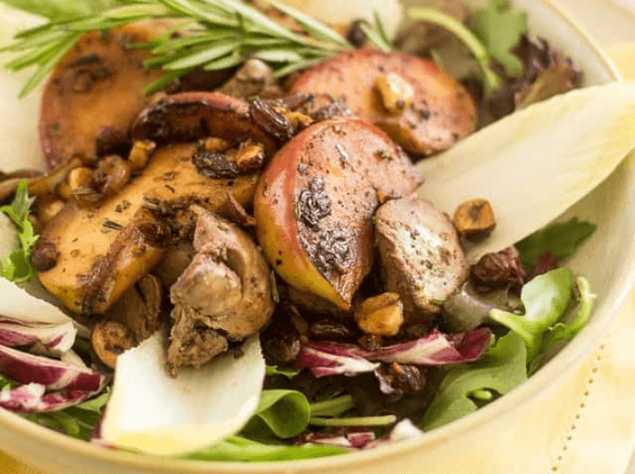

Hühnerleber mit Apfelsalat
(15 Min., 2 Port., F: 35 g, K: 15 g, E: 40 g)

Zutaten
Für den Salat:
- 1-2 TL Kokosöl, 400g Hühnerleber, 1 Zwiebel, 1 kleiner roter Apfel, 40 g Balsamico-Essig, 40 g Haselnüsse, 1 TL Rosmarin, 300 g Blattsalat, 10 Endivienblätter, Salz & Pfeffer
Für das Haselnuss-Vinaigrette:
- 40 g gemahlene Haselnüsse, 70 g Wasser, 2 TL Olivenöl, 2 TL Balsamico-Essig, Salz & Pfeffer
Vorbereitung
- Leber abwaschen und trocken tupfen. Mit Salz & Pfeffer würzen.
- Apfel in längliche Keile schneiden. Zwiebel in Ringe schneiden.
- Salat und Endivienblätter abwaschen.
Braten
- Kokosöl in eine Pfanne geben und Hühnerleber scharf anbraten bis sie an der Oberfläche braun und innen rosa ist.
- Die Leber aus der Pfanne nehmen. Apfel, Zwiebel, Haselnüsse und Rosmarin für max. 5 Minuten in die Pfanne geben.
- Leber zurück in die Pfanne geben und Hitze abstellen. Pfanne abdecken und ca. 5 Minuten stehen lassen.
Servieren
- Die Zutaten für die Vinaigrette vermischen und gut umrühren bis eine gleichmäßige, cremige Masse entsteht.
- Salat und Endivienblätter auf 2 Tellern verteilen und den Pfanneninhalt auf dem Salatbett verteilen, mit Haselnuss-Vinaigrette beträufeln.
Originalrezept unter: TheHealthyFoodie.com